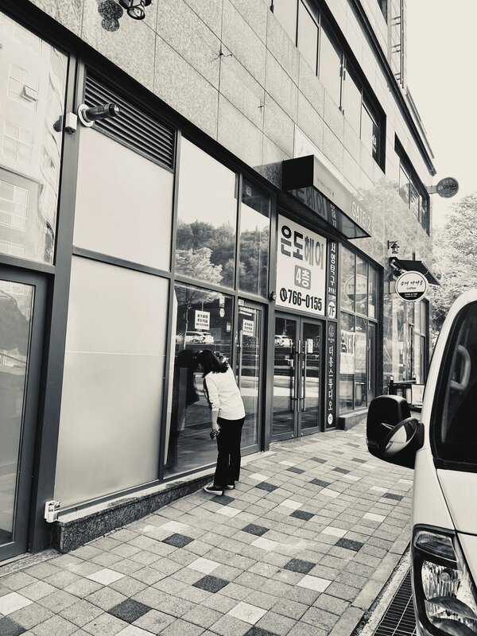
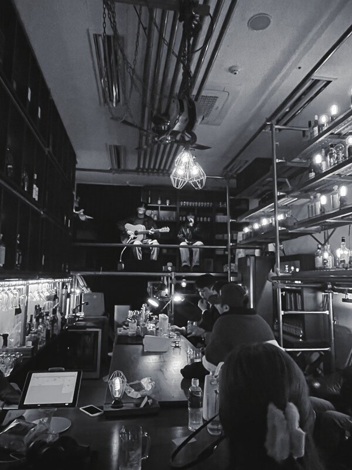
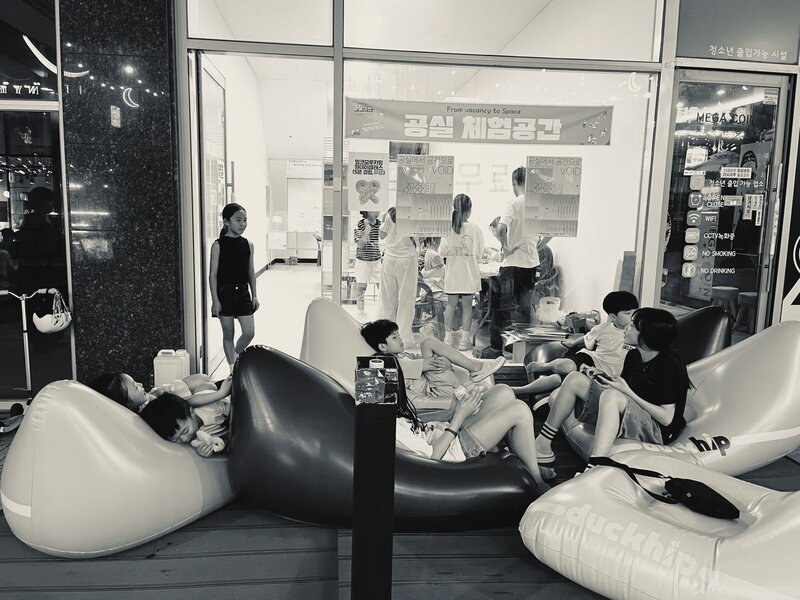
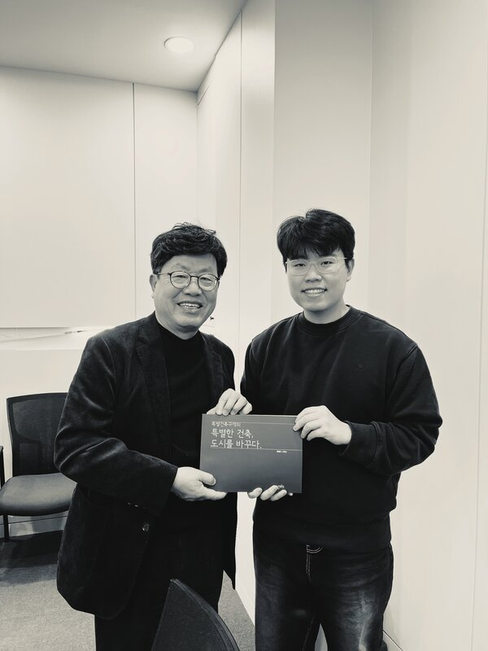
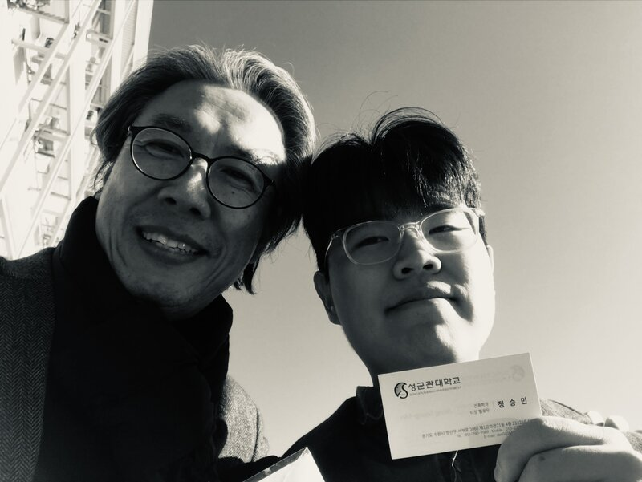
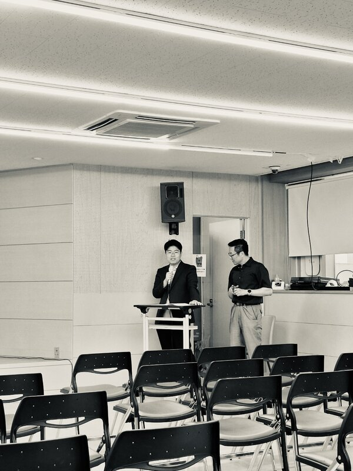
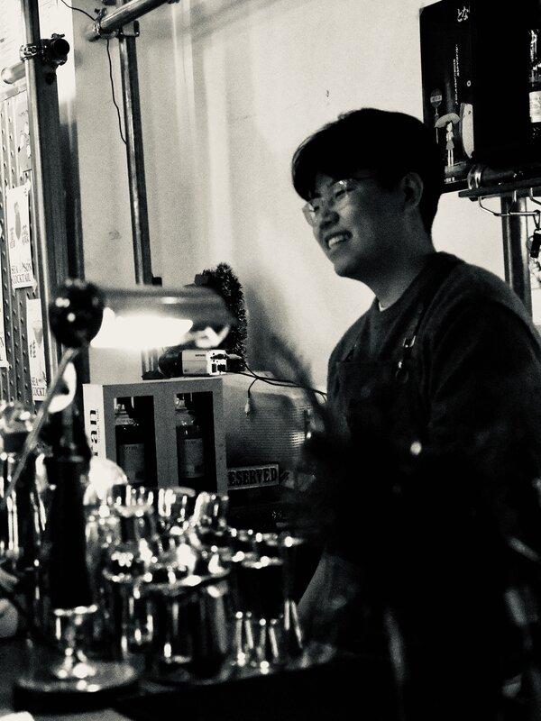

관설은 도시를 개발의 결과물이 아니라 장기적으로 운영되어야 하는 시스템으로 다룹니다. 현장 관측에서 소유구조 전환까지, 변화가 유지되는 구조를 설계합니다.
단기 보조금·용역 중심의 개입은 사업 종료와 함께 효과가 소멸됩니다.
운영 규칙 없이 선언된 계획은 주체가 바뀌면 지속되지 않습니다.
민간·행정·상인 등 서로 다른 시간축을 가진 주체들 간의 조정 구조가 부재합니다.
소유구조가 정비되지 않으면 장기 운영은 개인 의사에 좌우됩니다.
지역 내부에서 수익이 순환되는 구조를 먼저 설계합니다. 외부 지원 종료 후에도 자생할 수 있어야 합니다.
운영 규칙과 축적 구조를 제도적으로 편성합니다. 주체가 변경되어도 규칙이 유지됩니다.
PPP 구조로 공공의 목적과 민간의 실행력을 결합합니다. 갈등 조정이 아닌 지속성 확보가 핵심입니다.
소유구조 재편을 통해 장기 운영이 가능한 형태로 전환합니다. '아란' 독립 운영 전환이 실증 사례입니다.
도시 운영에서 발생하는 사실을 기록하고 누적합니다. 단기적 감각 대신 축적된 근거에 기반한 운영 결정을 가능하게 하는 학습 장치입니다.
공공의 목적을 유지한 상태에서 민간의 자본·시간·관리 능력을 결합합니다. 운영의 지속성과 책임을 제도적 구조로 확보하기 위한 장치입니다.
해당 지역 내부에서 수익이 순환되는 구조를 마련합니다. 지역 내 이익이 운영에 재투입될 때, 도시는 자생적 유지 상태에 도달합니다.
도시 자산이 단기 이익이나 개인 의사에 의해 흔들리지 않도록 편성합니다. 주체가 변경되어도 운영의 목적과 규칙이 유지되는 근간입니다.
도시가 실제로 어떻게
작동하는지 읽는 과정
지역 특성에 맞춘 프로그램으로
거점을 설계·제작
다양한 단체의 관점과 입장을
종합하여 방향을 정립
소유구조 재편을 통해
지속성을 확보하는 장치



약 1년간 생활패턴·공실·이동밀도 등 현장관측을 수행. 높은 분양가와 과잉공급에 의한 공실 장기화 구조를 진단했습니다.
취향 기반 위스키 바 '아란'을 기획. 연세대 디자인학과 협업으로 기획을 보완하고, 디자인·시공·운영을 직접 수행했습니다.
상인회와의 지속적 협의를 통해 공실을 향후 20년 존속을 위한 핵심 의제로 격상. 공청회와 지역행사를 통해 공식화했습니다.
'아란'을 PD 파트너 체제로 독립 전환. 매출연동 임대모델 실증사례로서 공실 해결 구조로 확장 적용을 추진합니다.



성균관대 건축학과 김우영 교수 지도 아래 64개소 이상 현장조사, 12개 업장 심층 인터뷰, 주민 15인 인터뷰를 수행했습니다.
청년층이 주도적으로 일을 생성하고 네트워킹이 가능한 길드형 거점공간. 현재 가입 인원 17인을 확보했습니다.
「신당어르신효잔치」, 상권 CI 리플렛 제작, 이용자·방문자·이방인 관점의 기록 출판물을 제작 진행 중입니다.
관측과 기획을 기반으로 지역 주체 간 조정 구조를 편성하고, 소유구조 설계를 통한 장기 운영 체계로 전환할 예정입니다.
관설은 직접 운영을 수행한 현장 경험을 기반으로, 대학 연구실·지역 상인회·공공기관과의 협업 네트워크를 통해 관측의 정밀도와 개입의 실효성을 확보합니다. 1인 창업에서 출발했지만, 현재는 PD 파트너·연구 협력·자문 체계를 갖춘 조직으로 확장 중입니다.

공실 문제, 상권 활성화, 지역 운영 체계 구축 등
도시운영에 관한 협업을 기다립니다.